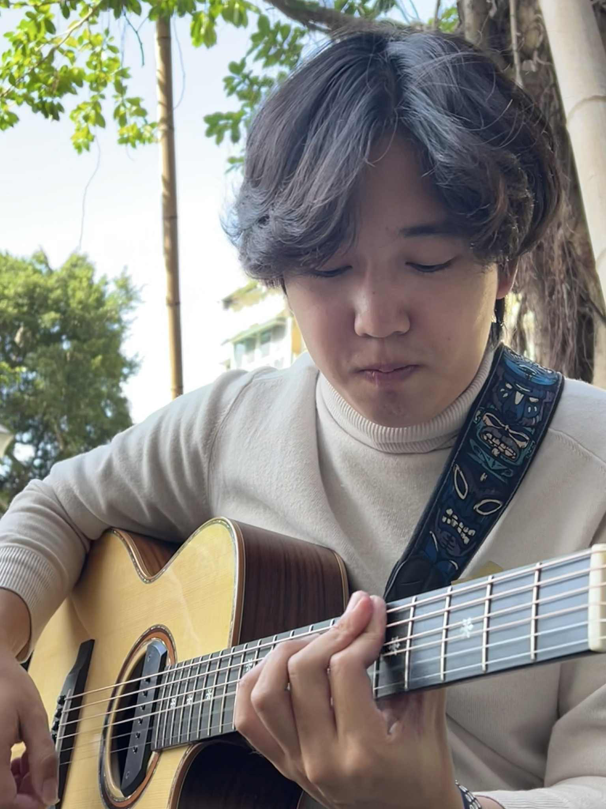
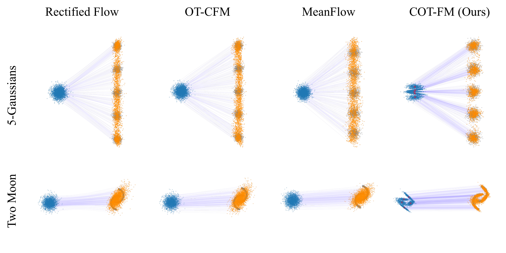
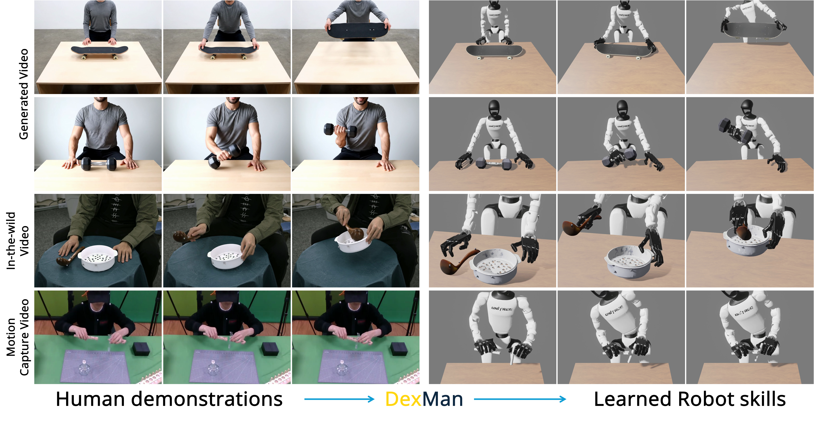

Task Inference Beyond Least Squares in Behavioral Foundation Model
In submission, 2026.
I am a research assistant working with Tsung-Wei Ke at National Taiwan University. My research studies why powerful learning systems fall short of their theoretical capabilities, and how we can address these failures with simple and general mechanisms. I currently work on flow matching models, behavioral foundation models, and reinforcement learning for robotics. I am seeking PhD opportunities for Fall 2027.

In submission, 2026.
In submission, 2026.

ICLR 2026

arXiv preprint, 2025.
* Equal contribution. † Corresponding author.
Student Representative Speaker
1st Place (served as coach)
1st Place Overall Winner
2nd Place & Best AI Performance Award
1st Place Grand Jury Prize
Jul–Dec 2026
Application Developer Developed NTU COOL AI Companion
Spring 2026
TA
Spring & Fall 2025
Lead TA
Fall 2025
TA